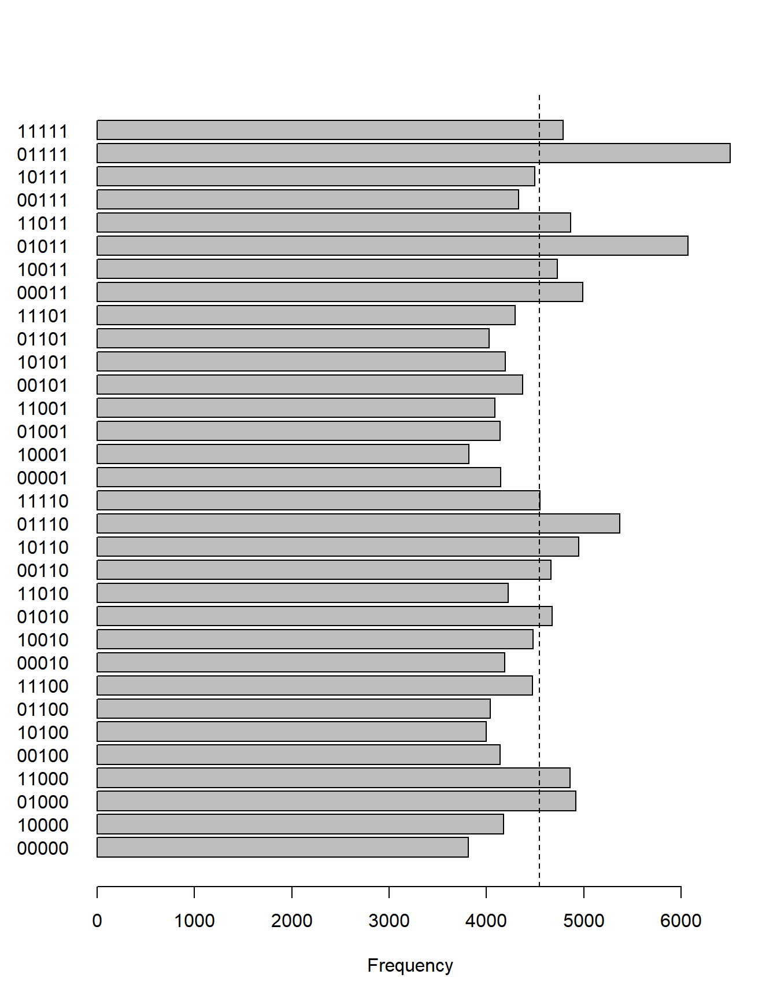
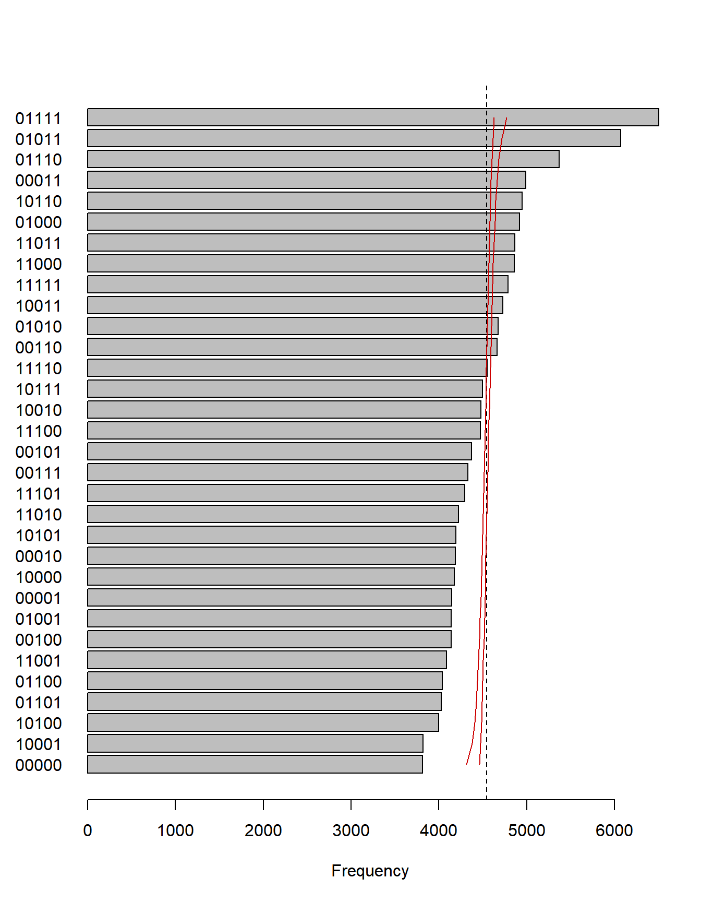

ここでは，GMMなどを用いずに大雑把に分布の非一様性 (偏り具合) を とらえるためにそれぞれの因子スコアの符号でクラス (象限) を分類し 数の分布を見るという分析法を試してみます ( この分析法は我々のコメント論文に対するリプライ論文で用いられていますが，もともとは我々がコメント論文の投稿前に著者に送った原稿の中で提案していたものです)。
実データ (Johnson-300) の解析1で作成した 因子スコアデータを読み出します。パスはご自身のものに合わせてください。
df_sc <- read.csv("C:/data/personality/fs_IPIP300.csv", header = TRUE)このcsvファイルはこちらからダウンロードできます。
今回の解析ではデータの平均がゼロにそろえられていることが 重要なので，関数scaleを使って因子ごとに標準化をします (Gerlachらも因子スコアは標準化して使っています)。
df_sc <- data.frame(scale(df_sc))N <- nrow(df_sc) # 行 (回答者)の数
n.class <- 2^5 # クラス (象限) の数
# それぞれの因子が高低の二値であり，5因子あるので2^5 = 32個になる
count.class <- numeric(n.class) # それぞれのクラスのカウンター
# クラスのインデックスを10進数で表し，カウントする
for (idx in 1:N){
cls.idx <- 1 +
as.integer(df_sc[idx,1] > 0) * 1 + # "N"
as.integer(df_sc[idx,2] > 0) * 2 + # "E"
as.integer(df_sc[idx,3] > 0) * 4 + # "O"
as.integer(df_sc[idx,4] > 0) * 8 + # "A"
as.integer(df_sc[idx,5] > 0) * 16 # "C"
count.class[cls.idx] <- count.class[cls.idx] + 1
}
# 2進数表現 (0: < 0, 1: > 0) でクラスのラベルを作る ("NEOAC"の順)
lb <- lapply(1:n.class,
function(x) paste((as.integer(intToBits(x-1))[1:5]), collapse=""))
# 各因子ごとの0,1とその回答者の数を表すデータフレームを用意
df.binary <- data.frame(matrix(0, nrow = 2^5, ncol = 6))
names(df.binary) <- c("N","E","O","A","C","Freq")
for (idxr in 1:n.class){
for (idxc in 1:5) {
df.binary[idxr,idxc] <-
as.integer(substr(lb[[idxr]],idxc,idxc))
}
df.binary[idxr,6] <- count.class[idxr]
}
head(df.binary)barplot(count.class,
names.arg = lb,
horiz = TRUE,
las = 1,
xlab = "Frequency")
# 全てのクラスが同じ割合で起こると仮定した場合の頻度
abline(v = N/n.class, lty = 2) 
次に，頻度順に並び替えてみます。 また，全てのクラスが同じ割合で起こると仮定したモデルの99%信頼区間も 数値的に求めます。
lab <- unlist(lb)
oidx <- order(count.class,decreasing = F)
mp <- barplot(count.class[oidx],
names.arg = lab[oidx],
horiz = TRUE,
las = 1,
xlab = "Frequency")
# 全てのクラスが同じ割合で起こると仮定した場合の頻度
abline(v = N/n.class, lty = 2)
# 全てのクラスが同じ割合で起こると仮定した場合の99%信頼区間を
# 求める
n.sample <- 1000
a <- rmultinom(n = n.sample,N,rep(1/n.class,n.class))
b <- apply(a, MARGIN = 2, function(i){sort(i,decreasing = F)})
b <- t(b)
ci <- apply(b, MARGIN = 2, function(i){quantile(i, c(.01,.99))})
lines(ci[1,], mp[,1], "l", lty = 1, col = "red3")
lines(ci[2,], mp[,1], "l", lty = 1, col = "red3") 一様性を仮定した場合の信頼区間から大きく外れて多い/少ないクラスがあり， 分布に強い非一様性があることがわかります。
ここで，以下の二点に気を付ける必要があります。
- 因子スコアは標準化されているため，それぞれの因子スコアでは平均より上と下はちょうど半分いるはず。したがって，今回観察された偏りは，単に各因子の平均が高い低いということとは関係ない。
- 因子分析は直交回転を仮定していた。そのため，厳密ではないが因子スコアも相関はほぼゼロになる。したがって，この偏りは2次の相関では説明できない，高次の因子間の依存関係を反映したものと思われる。
以下の二点は未解決問題です。
この非一様性がどのようなメカニズムで出てくるのか (本当に人類のパーソナリティの偏りを反映したものか，回答スタイルなどの個人差などによるアーティファクトなのか，用いられた心理尺度の性質なのか，あるいはWEB調査に回答したサンプルの偏りなのか)
この偏りを説明する適切な統計モデルはあるのか。
2.に関しては，Multivariate skew-normal distribution で因子スコアをフィットし，そのモデルから人工データを生成して そのデータにこのページで紹介した二値化解析をしてみましたが， この強い非一様性は再現されませんでした。copulaなども試してみましたが 同様の結果でした。なかなか5次元データの複雑な依存関係を パラメトリックなモデルでとらえることは難しいようです。
(もちろん，カーネル密度推定のようなノンパラメトリックな方法では とらえられているといえるのですが，それでは結局分布の構造を理解したことにはならないと思います。)
興味を持たれた方はぜひこの問題に挑戦してみてください。